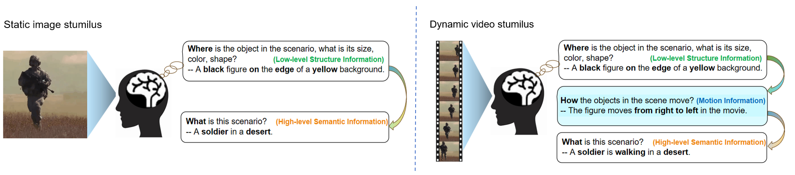

Abstract
Reconstructing human dynamic vision from brain activity is a challenging task with great scientific significance. Although prior video reconstruction methods have made substantial progress, they still suffer from several limitations, including: (1) difficulty in simultaneously reconciling semantic (e.g. categorical descriptions), structure (e.g. size and color), and consistent motion information (e.g. order of frames); (2) low temporal resolution of fMRI, which poses a challenge in decoding multiple frames of video dynamics from a single fMRI frame; (3) reliance on video generation models, which introduces ambiguity regarding whether the dynamics observed in the reconstructed videos are genuinely derived from fMRI data or are artifacts introduced by the model's exposure to external video data during training. To overcome these limitations, we propose a two-stage model named Mind-Animator. During the fMRI-to-feature stage, we decouple semantic, structure, and motion features from fMRI. Specifically, we employ fMRI-vision-language tri-modal contrastive learning to decode semantic feature from fMRI and design a sparse causal attention mechanism for decoding multi-frame video motion features through a next-frame-prediction task. In the feature-to-video stage, these features are integrated into videos using an inflated Stable Diffusion, effectively eliminating external video data interference. Extensive experiments on multiple video-fMRI datasets demonstrate that our model achieves state-of-the-art performance. Comprehensive experimental analyses further elucidate the interpretability of our model from a neurobiological perspective.
Motivations

When subjects view static images, the primary visual cortex first processes low-level structural information, such as location, shape, size, and color. Subsequently, in the higher visual cortex, the interpretation of category and description leads to high-level semantic understanding. Based on these findings in neuroscience, previous studies have attempted to reconstruct images by disentangling semantic and structural information. Naturally, when reconstructing dynamic video stimuli, in addition to these two features, it is also crucial to consider how motion information can be decoded from brain responses.
Related works
As depicted in Figure (a), early works by Han, Wen, Wang, and others mapped brain responses to the feature spaces of deep neural networks (DNNs) for end-to-end video reconstruction. To address the scarcity of paired video-fMRI data, Kupershmidt further advanced this approach by leveraging self-supervised learning to incorporate a large volume of unpaired video data. Although these studies demonstrated the feasibility of reconstructing videos from fMRI signals, the results notably lacked explicit semantic content.
As shown in Figure (b), with advancements in multimodal and generative models, Chen, Sun, et al. used contrastive learning to map fMRI signals to the CLIP latent space for semantic decoding, followed by input into a video generation model for reconstruction. This approach produces semantically coherent and smooth videos, but it remains whether the motion information in the reconstructions originates from the fMRI or from the external video data used to train the video generation model.
To address the above issue, we propose Mind-Animator. By independently decoding semantic, structural, and motion information from fMRI signals and inputting them into an inflated image generation model, we ensure that the motion in the reconstructed videos originates solely from the fMRI data.

Notably, our method, which decodes semantic, structural, and motion information separately, produces reconstructions more closely aligned with the original video's appearance and motion trajectory (e.g., a forward-extending road). However, as shown in the red box, the use of an image generation model alone introduces 'jumpiness' between frames, resulting in lower inter-frame similarity and reduced smoothness compared to video generation models.
Therefore, video generation models were only used in the video demonstrations on the project homepage to enhance smoothness. In all other contexts (e.g., quantitative analysis, ablation studies, interpretability analysis), unless otherwise specified, only image generation models were employed.
Interpretability Analysis
· Have we truly decoded motion information from fMRI?
Repeating the aforementioned procedure 100 times, the P-value of the shuffle test can be estimated as
A lower P-value indicates a higher consistency between the reconstructed video frames and the ground truth before shuffling.
· Which brain regions are responsible for decoding different features, respectively?

· Low-level visual cortices (LVC) are predominantly responsible for processing low-level information of visual stimuli, such as orientation and contour. In contrast, high-level visual cortices (HVC) are responsible for processing high-level semantic information of objects.
· Both LVC and HVC contribute to the decoding of motion information, with significant weight attributed to V1 and MT. This observation is consistent with previous work, which validates the function of MT in visual motion processing.
Fail Cases
Case 1：Decoding errors in semantic, structural, or motion features due to low decoding accuracy.
Ground truth Reconstructed
Ground truth Reconstructed
Ground truth Reconstructed
Ground truth Reconstructed
Case 2：The data acquisition paradigm causes abrupt content transitions at the boundaries of video clips, which are uniformly segmented from the complete videos viewed by the subjects during data collection.
Ground truth Reconstructed
Ground truth Reconstructed
Ground truth Reconstructed
Ground truth Reconstructed